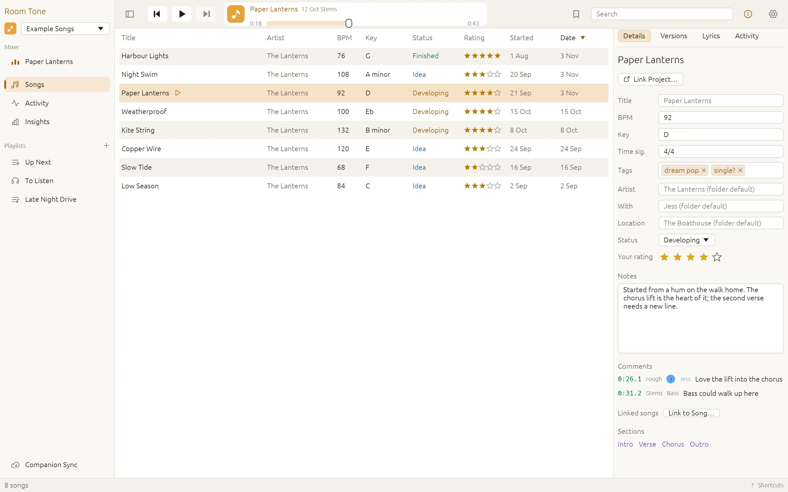
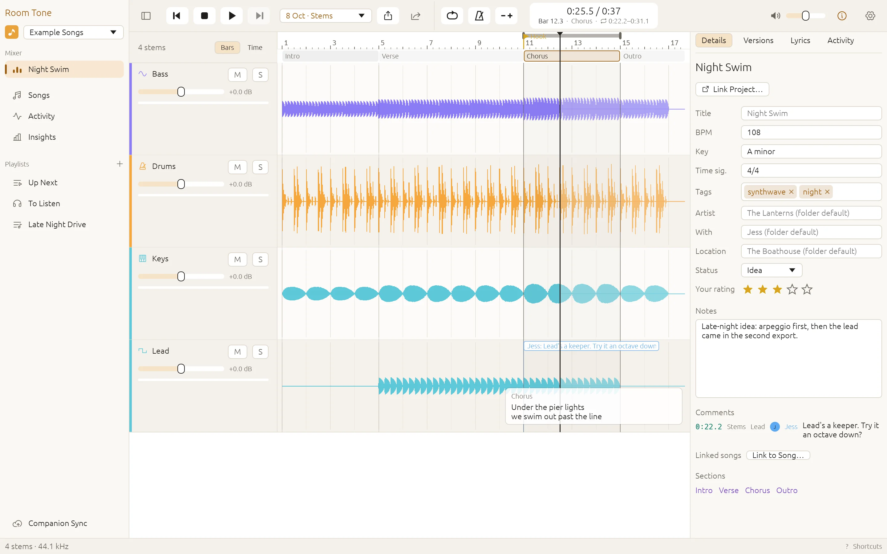
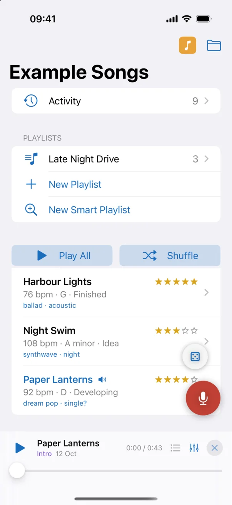
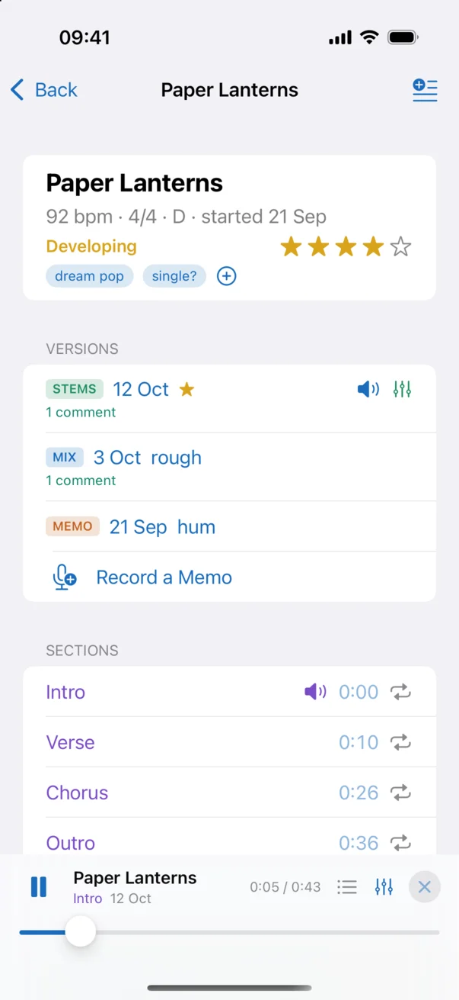
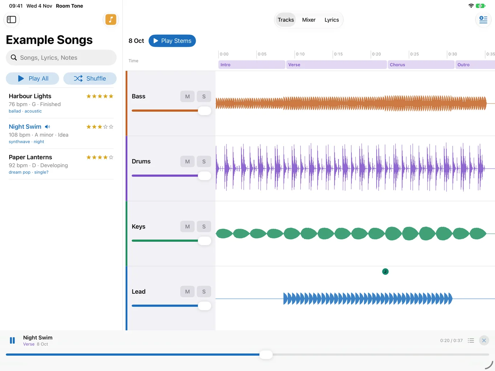
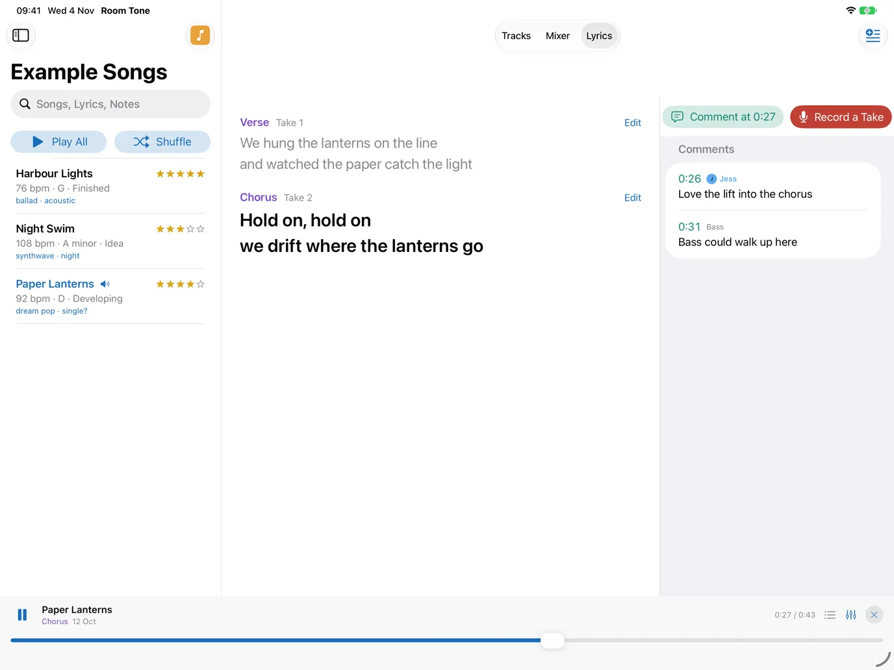

The library
Each song is a folder: the voice memo it started as, the DAW project it grew into, and every rough mix and stem export since, kept together. Room Tone lists every song with its tempo, key, status and tags, and plays them straight from the list.
Rate them, write notes and lyrics, and leave comments at a moment in a mix. Keep a library of your own and one for each band, and look through them apart or together.

The mixer
Open a song to hear its parts. Solo and mute the stems, cycle a section, slow it down without changing the key, and switch to another version at the same point to compare them.
A/B plays two mixes in sync, one heard at a time, matched for loudness. When a mix is right, bounce it, without opening the project.

On your iPhone and Apple Watch
The Mac publishes your libraries to iCloud Drive for your iPhone and iPad, with previews to play anywhere, and in the car with CarPlay. Tags, notes, lyrics and comments made on the phone go back to the Mac.


On the iPad
The iPad lays a song out as the Mac's mixer does: each stem's waveform under the song's sections, to mute, solo and set its level, with the library beside it.
Lyrics shows the words with the section playing lit, and the band's comments beside them, to write and rehearse from.


With your band
Share a band's library through iCloud Drive and everyone has the band's songs on their phone, and nothing else of yours. Comments, ratings and ideas show who left them; To Listen gathers the versions you haven't heard yet, and Activity what the band has been doing.
Send a bandmate a link to a song at a moment in it, which opens in Room Tone at that point. Or send the mix itself to anyone, through Messages, Mail or AirDrop.